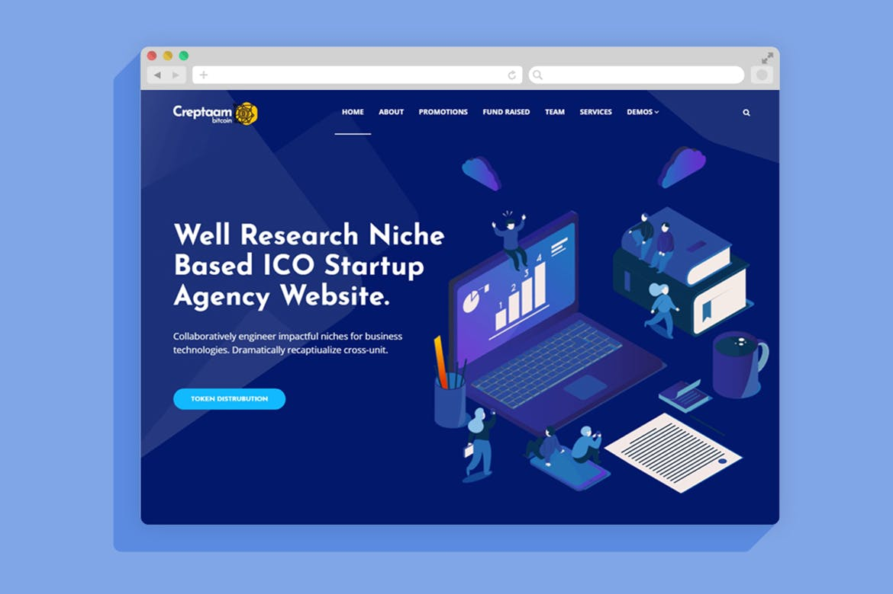
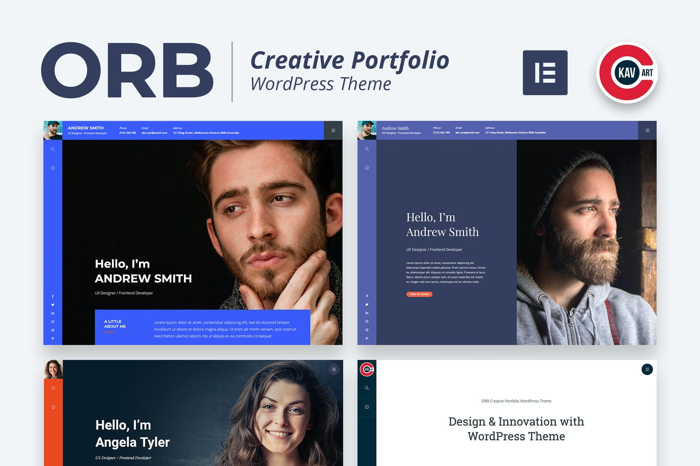
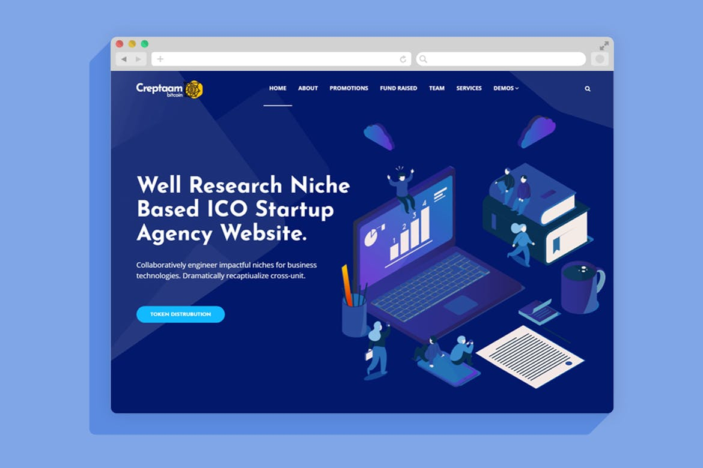
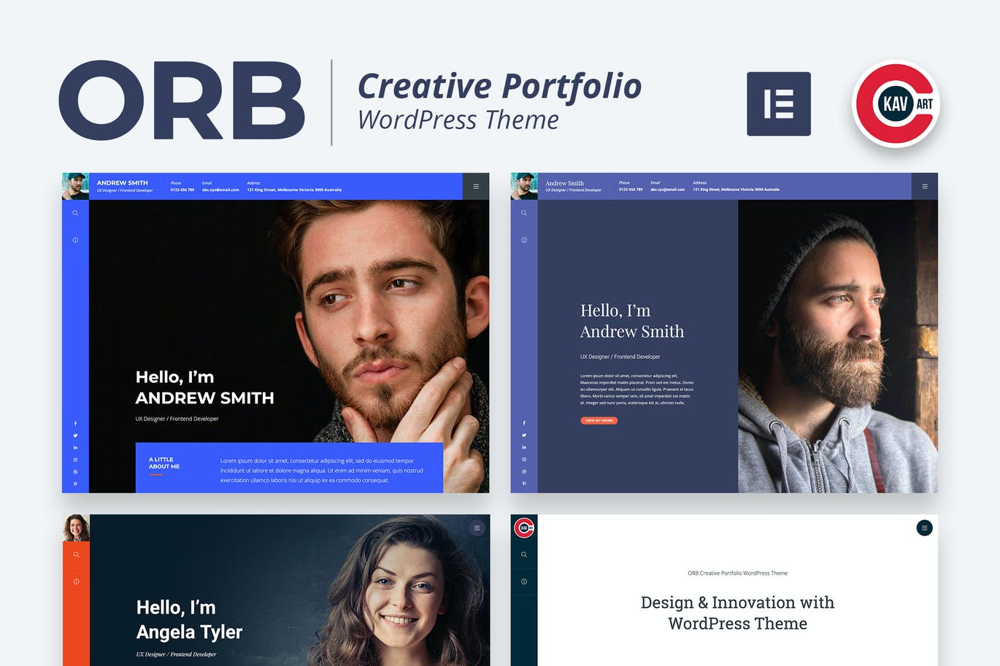
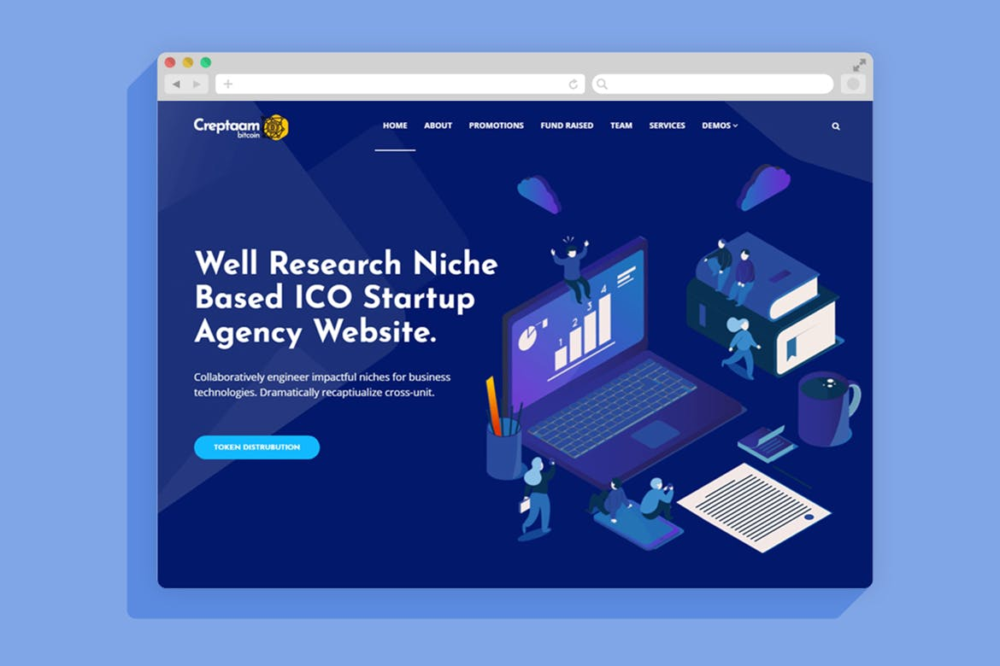
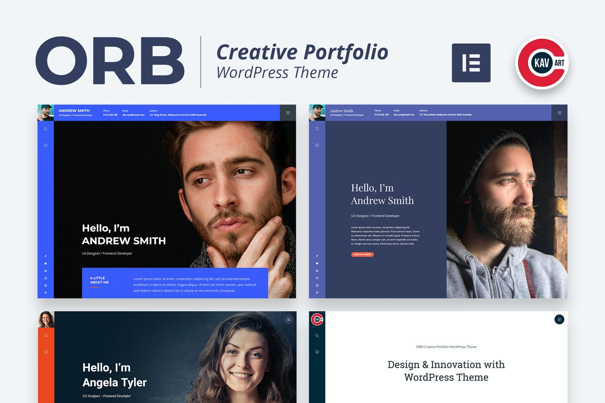
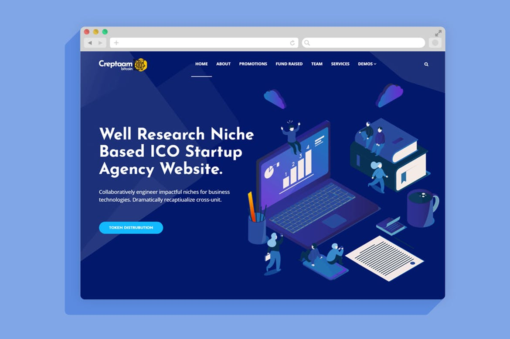
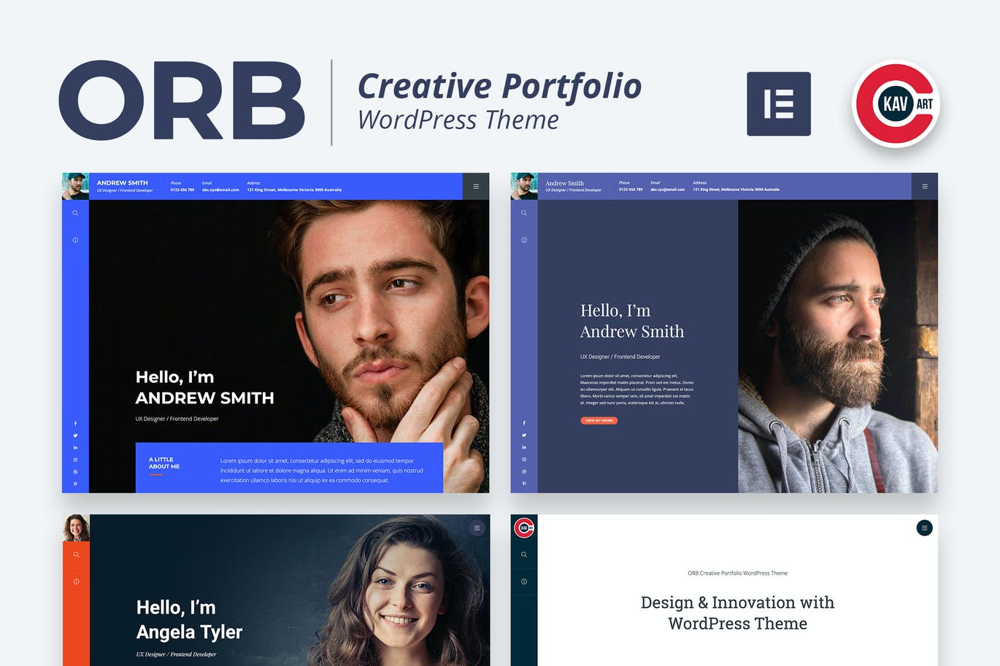

"WordPress is a factory that makes webpages"[12] is a core analogy designed to clarify the functions of WordPress: it stores content and enables a user to create and publish webpages, requiring nothing beyond a domain and a hosting service. WordPress has a web template system using a template processor. Its architecture is a front controller, routing all requests for non-static URIs to a single PHP file which parses the URI and identifies the target page. This allows support for more human-readable permalinks.[13] Themes WordPress users may install and switch among different themes. Themes allow users to change the look and functionality of a WordPress website without altering the core code or site content. Every WordPress website requires at least one theme to be present and every theme should be designed using WordPress standards with structured PHP, valid HTML (HyperText Markup Language), and Cascading Style Sheets (CSS). Themes may be directly installed using the WordPress "Appearance" administration tool in the dashboard, or theme folders may be copied directly into the themes directory, for example, via FTP.[14] The PHP, HTML and CSS found in themes can be directly modified to alter theme behavior, or a theme can be a "child" theme that inherits settings from another theme and selectively overrides features.[15] WordPress themes are generally classified into two categories: free and premium. Many free themes are listed in the WordPress theme directory (also known as the repository), and premium themes are available for purchase from marketplaces and individual WordPress developers. WordPress users may also create and develop their own custom themes. The free theme Underscores created by the WordPress developers has become a popular basis for new themes.[16] Plugins WordPress' plugin architecture allows users to extend the features and functionality of a website or blog. As of May 2021, WordPress.org has 58,463 plugins available,[17] each of which offers custom functions and features enabling users to tailor their sites to their specific needs. However, this does not include the premium plugins that are available (approximately 1,500+), which may not be listed in the WordPress.org repository. These customizations range from search engine optimization (SEO), to client portals used to display private information to logged-in users, to content management systems, to content displaying features, such as the addition of widgets and navigation bars. Not all available plugins are always abreast with the upgrades, and as a result, they may not function properly or may not function at all. Most plugins are available through WordPress themselves, either via downloading them and installing the files manually via FTP or through the WordPress dashboard. However, many third parties offer plugins through their own websites, many of which are paid packages. Web developers who wish to develop plugins need to learn WordPress' hook system which consists of over 2000 hooks (as of Version 5.7 in 2021) [18] divided into two categories: action hooks and filter hooks. Plugins also represent a development strategy that can transform WordPress into all sorts of software systems and applications, limited only by the imagination and creativity of the programmers. These are implemented using custom plugins to create non-website systems, such as headless WordPress applications and Software as a Service (SaaS) products. Plugins also could be used by hackers targeting the site that use WordPress, as hackers could exploit bugs on WordPress plugins themselves instead of exploiting the bugs on WordPress itself.[19] Mobile applications Phone apps for WordPress exist for WebOS,[20] Android,[21] iOS,[22][23] Windows Phone and BlackBerry.[24] These applications, designed by Automattic, have options such as adding new blog posts and pages, commenting, moderating comments, replying to comments in addition to the ability to view the stats.[22][23] Accessibility The WordPress Accessibility Team has worked to improve the accessibility for core WordPress as well as support a clear identification of accessible themes.[25] The WordPress Accessibility Team provides continuing educational support about web accessibility and inclusive design. The WordPress Accessibility Coding Standards state that "All new or updated code released in WordPress must conform with the Web Content Accessibility Guidelines 2.0 at level AA."[26] Other features WordPress also features integrated link management; a search engine–friendly, clean permalink structure; the ability to assign multiple categories to posts; and support for tagging of posts. Automatic filters are also included, providing standardized formatting and styling of text in posts (for example, converting regular quotes to smart quotes). WordPress also supports the Trackback and Pingback standards for displaying links to other sites that have themselves linked to a post or an article. WordPress posts can be edited in HTML, using the visual editor, or using one of a number of plugins that allow for a variety of customized editing features.
WordPress 5.0 "Bebo" The December 2018 release of WordPress 5.0, "Bebo", is named in homage to the pioneering Cuban jazz musician Bebo Valdés.[93] New WordPress Page Editor.png It included a new default editor "Gutenberg" – a block-based editor; it allows users to modify their displayed content in a much more user friendly way than prior iterations. Blocks are abstract units of markup that, composed together, form the content or layout of a web page.[94] Past content that was created on WordPress pages is listed under what is referred to as a Classic Block.[95] Prior to Gutenberg, there were several block-based editors available as WordPress plugins, e.g. Elementor, and following the release of Gutenberg Elementor was compared to existing plugins.[96][97] Classic Editor plugin The Classic Editor Plugin was created as a result of User preferences and helped website developers maintain past plugins only compatible with WordPress 4.9.8, giving plugin developers time to get their plugins updated & compatible with the 5.0 release. Having the Classic Editor plugin installed restores the "classic" editing experience that WordPress has had up until the WordPress 5.0 release.[98] The Classic Editor Plugin will be supported at least until 2022.[99] The Classic Editor plugin is active on over 5,000,000 installations of WordPress.[100] Vulnerabilities Many security issues[101] have been uncovered in the software, particularly in 2007, 2008, and 2015. According to Secunia, WordPress in April 2009 had seven unpatched security advisories (out of 32 total), with a maximum rating of "Less Critical". Secunia maintains an up-to-date list of WordPress vulnerabilities.[102] In January 2007, many high-profile search engine optimization (SEO) blogs, as well as many low-profile commercial blogs featuring AdSense, were targeted and attacked with a WordPress exploit.[103] A separate vulnerability on one of the project site's web servers allowed an attacker to introduce exploitable code in the form of a back door to some downloads of WordPress 2.1.1. The 2.1.2 release addressed this issue; an advisory released at the time advised all users to upgrade immediately.[104] In May 2007, a study revealed that 98% of WordPress blogs being run were exploitable because they were running outdated and unsupported versions of the software.[105] In part to mitigate this problem, WordPress made updating the software a much easier, "one click" automated process in version 2.7 (released in December 2008).[106] However, the filesystem security settings required to enable the update process can be an additional risk.[107] In a June 2007 interview, Stefan Esser, the founder of the PHP Security Response Team, spoke critically of WordPress' security track record, citing problems with the application's architecture that made it unnecessarily difficult to write code that is secure from SQL injection vulnerabilities, as well as some other problems.[108] In June 2013, it was found that some of the 50 most downloaded WordPress plugins were vulnerable to common Web attacks such as SQL injection and XSS. A separate inspection of the top-10 e-commerce plugins showed that seven of them were vulnerable.[109] In an effort to promote better security, and to streamline the update experience overall, automatic background updates were introduced in WordPress 3.7.[110] Individual installations of WordPress can be protected with security plugins that prevent user enumeration, hide resources and thwart probes. Users can also protect their WordPress installations by taking steps such as keeping all WordPress installation, themes, and plugins updated, using only trusted themes and plugins,[111] and editing the site's .htaccess configuration file if supported by the web server to prevent many types of SQL injection attacks and block unauthorized access to sensitive files. It is especially important to keep WordPress plugins updated because would-be hackers can easily list all the plugins a site uses, and then run scans searching for any vulnerabilities against those plugins. If vulnerabilities are found, they may be exploited to allow hackers to, for example, upload their own files (such as a web shell) that collect sensitive information. Developers can also use tools to analyze potential vulnerabilities, including WPScan, WordPress Auditor and WordPress Sploit Framework developed by 0pc0deFR. These types of tools research known vulnerabilities, such as a CSRF, LFI, RFI, XSS, SQL injection and user enumeration. However, not all vulnerabilities can be detected by tools, so it is advisable to check the code of plugins, themes and other add-ins from other developers. In March 2015, it was reported by many security experts and SEOs, including Search Engine Land, that a SEO plugin for WordPress called Yoast which is used by more than 14 million users worldwide has a vulnerability that could lead to an exploit where hackers can do a Blind SQL injection.[112][113] To fix that issue they immediately introduced a newer version 1.7.4 of the same plugin to avoid any disturbance on web because of the security lapse that the plugin had.[114] In January 2017, security auditors at Sucuri identified a vulnerability in the WordPress REST API that would allow any unauthenticated user to modify any post or page within a site running WordPress 4.7 or greater. The auditors quietly notified WordPress developers, and within six days WordPress released a high-priority patch to version 4.7.2, which addressed the problem.[115][116] The canvas fingerprinting warning is typically given by Tor Browser for WordPress-based websites. As of WordPress 5.2, the minimum PHP version requirement is PHP 5.6,[117] which was released on August 28, 2014,[118] and which has been unsupported by the PHP Group and not received any security patches since December 31, 2018.[118] Thus, WordPress recommends using PHP version 7.3 or greater.[117] In the absence of specific alterations to their default formatting code, WordPress-based websites use the canvas element to detect whether the browser is able to correctly render emoji. Because Tor Browser does not currently discriminate between this legitimate use of the Canvas API and an effort to perform canvas fingerprinting, it warns that the website is attempting to 'extract HTML5 canvas image data'. Ongoing efforts seek workarounds to reassure privacy advocates while retaining the ability to check for proper emoji rendering capability.[119] Development and support Key developers Matt Mullenweg and Mike Little were co-founders of the project. The core lead developers include Helen Hou-Sandí, Dion Hulse, Mark Jaquith, Matt Mullenweg, Andrew Ozz, and Andrew Nacin.[120][121] WordPress is also developed by its community, including WP testers, a group of volunteers who test each release. They have early access to nightly builds, beta versions and release candidates. Errors are documented in a special mailing list or the project's Trac tool. Though largely developed by the community surrounding it, WordPress is closely associated with Automattic, the company founded by Matt Mullenweg.[122] On September 9, 2010, Automattic handed the WordPress trademark to the newly created WordPress Foundation, which is an umbrella organization supporting WordPress.org (including the software and archives for plugins and themes), bbPress and BuddyPress. WordCamp developer and user conferences A WordCamp in Sofia, Bulgaria (2011) WordCamps are casual, locally-organized conferences covering everything related to WordPress.[123] The first such event was WordCamp 2006 in August 2006 in San Francisco, which lasted one day and had over 500 attendees.[124][125] The first WordCamp outside San Francisco was held in Beijing in September 2007.[126] Since then, there have been over 1,022 WordCamps in over 75 cities in 65 different countries around the world.[123] WordCamp San Francisco 2014 was the last official annual conference of WordPress developers and users taking place in San Francisco, having now been replaced with WordCamp US.[127] First ran in 2013 as WordCamp Europe, regional WordCamps in other geographical regions are held with the aim of connecting people who aren't already active in their local communities and inspire attendees to start user communities in their hometowns.[128] In 2019, the Nordic region had its own WordCamp Nordic.[129][130] The first WordCamp Asia was to be held in 2020,[131] but cancelled due to the COVID-19 pandemic.[132] Support WordPress' primary support website is WordPress.org. This support website hosts both WordPress Codex, the online manual for WordPress and a living repository for WordPress information and documentation,[133] and WordPress Forums, an active online community of WordPress users.[134]
History b2/cafelog, more commonly known as b2 or cafelog, was the precursor to WordPress.[28] b2/cafelog was estimated to have been installed on approximately 2,000 blogs as of May 2003.[29] It was written in PHP for use with MySQL by Michel Valdrighi, who is now a contributing developer to WordPress. Although WordPress is the official successor, another project, b2evolution, is also in active development. WordPress first appeared in 2003 as a joint effort between Matt Mullenweg and Mike Little to create a fork of b2.[30] Christine Selleck Tremoulet, a friend of Mullenweg, suggested the name WordPress.[31][32] In 2004 the licensing terms for the competing Movable Type package were changed by Six Apart, resulting in many of its most influential users migrating to WordPress.[33][34] By October 2009 the Open Source CMS MarketShare Report concluded that WordPress enjoyed the greatest brand strength of any open-source content management system. As of May 2021, WordPress is used by 64.8% of all the websites whose content management system is known. This is 41.4% of the top 10 million websites.[5] Awards and recognition Winner of InfoWorld's "Best of open source software awards: Collaboration", awarded in 2008.[35] Winner of Open Source CMS Awards's "Overall Best Open Source CMS", awarded in 2009.[36] Winner of digitalsynergy's "Hall of Fame CMS category in the 2010 Open Source", awarded in 2010.[37] Winner of InfoWorld's "Bossie award for Best Open Source Software", awarded in 2011.[38] WordPress has a five star privacy rating from the Electronic Frontier Foundation.[39]